biplotEZ enhancements
biplotEZ_enhancements.RmdIntroduction
When enhancing a biplot, various additional features can significantly improve its interpretability and utility. Introducing alpha bags helps visualize the central region and variability within a group, providing a robust measure of data concentration. Adding confidence ellipses can illustrate the spread and correlation of data points, making the underlying structure more evident. Including the capability to add new samples and axes facilitates dynamic exploration and comparison of data sets. The option to predict samples and means allows for the projection of data points onto the biplot display, aiding in predictive analysis. Moreover, tools for reflecting or rotating the biplot display can enhance the visual representation by aligning the plot with the user’s analytical needs, offering a clearer perspective on the relationships and dimensions within the data.
The function alpha.bags()
An \(\alpha\)-bag encloses the \(\alpha100\%\) inner data points in a cloud of points. It is based on the concept of halfspace location depth as defined by Tukey (1975). Rousseeuw, Ruts, and Tukey (1999) generalised a boxplot to a two-dimensional bagplot where the box is replaced by a bag containing the inner \(50\%\) of the observations. Gower, Lubbe, and Roux (2011) replaces the \(50\%\)-bag contour by a general \(\alpha100\%\) contour referred to as an \(\alpha\)-bag.
When the number of samples in the biplot is larger, it becomes
difficult to isolate individual observations. Often, when a grouping
variable is present, the interest is not so much in the individual
samples, but rather in the location and spread of the groups. In the
plot below, we enclose each century’s number of sunspots by a \(95\%\)-bag where the months are used as 12
different variables for each year (sample point). Note that the legend
displays the \(\alpha\)-bags while
samples = FALSE is left at the default. Both can be
displayed, but since the \(\alpha\)-bags’ colour defaults to the
colour of the sample points, both are not necessary here.
sunspots <- matrix (sunspot.month[1:(264*12)], ncol = 12, byrow = TRUE)
years <- 1749:2012
rownames(sunspots) <- years
colnames(sunspots) <- c("Jan", "Feb", "Mar", "Apr", "May", "Jun",
"Jul", "Aug", "Sep", "Oct", "Nov", "Dec")
century <-paste(floor((years-1)/100)+1, ifelse (floor((years-1)/100)+1<21, "th","st"), sep = "-")
biplot(sunspots, group.aes=century) |> PCA() |>
axes (label.dir = "Hor", label.line = c(0.8, rep(0,10), 0.8)) |>
alpha.bags () |>
legend.type(bags = TRUE) |> plot()
#> Computing 0.95 -bag for 18-th
#> Computing 0.95 -bag for 19-th
#> Computing 0.95 -bag for 20-th
#> Computing 0.95 -bag for 21-st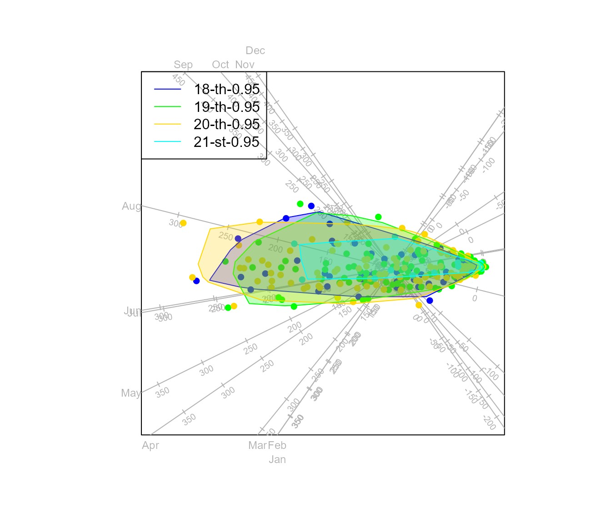
By default one \(95\%\)-bag is
constructed for each group. In general, the alpha.bags()
function accepts an object of class biplot as first argument. The next
argument alpha can be specified as a single value, or to
construct a series of \(\alpha\)-bags
for a group, alpha can be a vector argument. The argument
which specifies the groups to be fitted with \(\alpha\)-bags. By default the
opacity argument is set to \(0.25\), but by setting
opacity = 0 removes the fill of the \(\alpha\)-bags.
biplot(sunspots, group.aes=century) |> PCA() |>
axes (label.dir = "Hor", label.line = c(0.8, rep(0,10), 0.8)) |>
alpha.bags (alpha = c(0.9, 0.95, 0.99), which = c(1,4), opacity = 0) |>
legend.type(bags = TRUE) |> plot()
#> Computing 0.9 -bag for 18-th
#> Computing 0.9 -bag for 21-st
#> Computing 0.95 -bag for 18-th
#> Computing 0.95 -bag for 21-st
#> Computing 0.99 -bag for 18-th
#> Computing 0.99 -bag for 21-st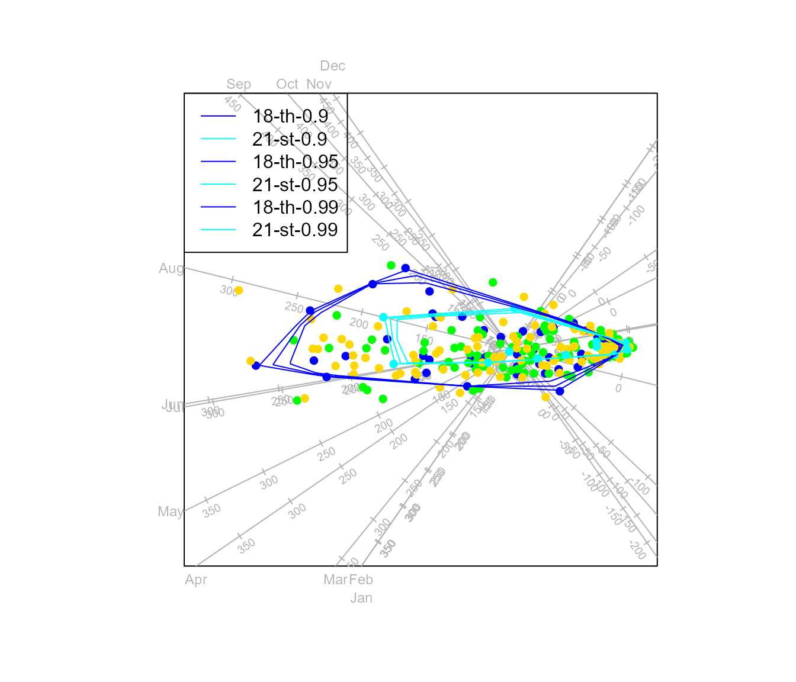
In the biplot above, the colours were recycled for each alpha value.
To specify differential colours, we can use the col
argument and similarly the lty and or lwd
arguments. Since we are mostly interested in the location and overlap of
the clouds of points we can remove the indivdiual samples by setting
samples (which = NULL). The default colours will still be
used for the \(\alpha\)-bags and we
chose to specify different line types for different \(\alpha\) values. Here the
opacity is set to \(0.05\)
which plots a lighter shade inside the \(\alpha\)-bags.
biplot(sunspots, group.aes=century) |> PCA() |>
axes (label.dir = "Hor", label.line = c(0.8, rep(0,10), 0.8)) |>
samples (which = NULL) |>
alpha.bags (alpha = c(0.9, 0.95, 0.99), lty = c(1,3,5), opacity=0.05) |>
legend.type(bags = TRUE, new = TRUE) |> plot()
#> Computing 0.9 -bag for 18-th
#> Computing 0.9 -bag for 19-th
#> Computing 0.9 -bag for 20-th
#> Computing 0.9 -bag for 21-st
#> Computing 0.95 -bag for 18-th
#> Computing 0.95 -bag for 19-th
#> Computing 0.95 -bag for 20-th
#> Computing 0.95 -bag for 21-st
#> Computing 0.99 -bag for 18-th
#> Computing 0.99 -bag for 19-th
#> Computing 0.99 -bag for 20-th
#> Computing 0.99 -bag for 21-st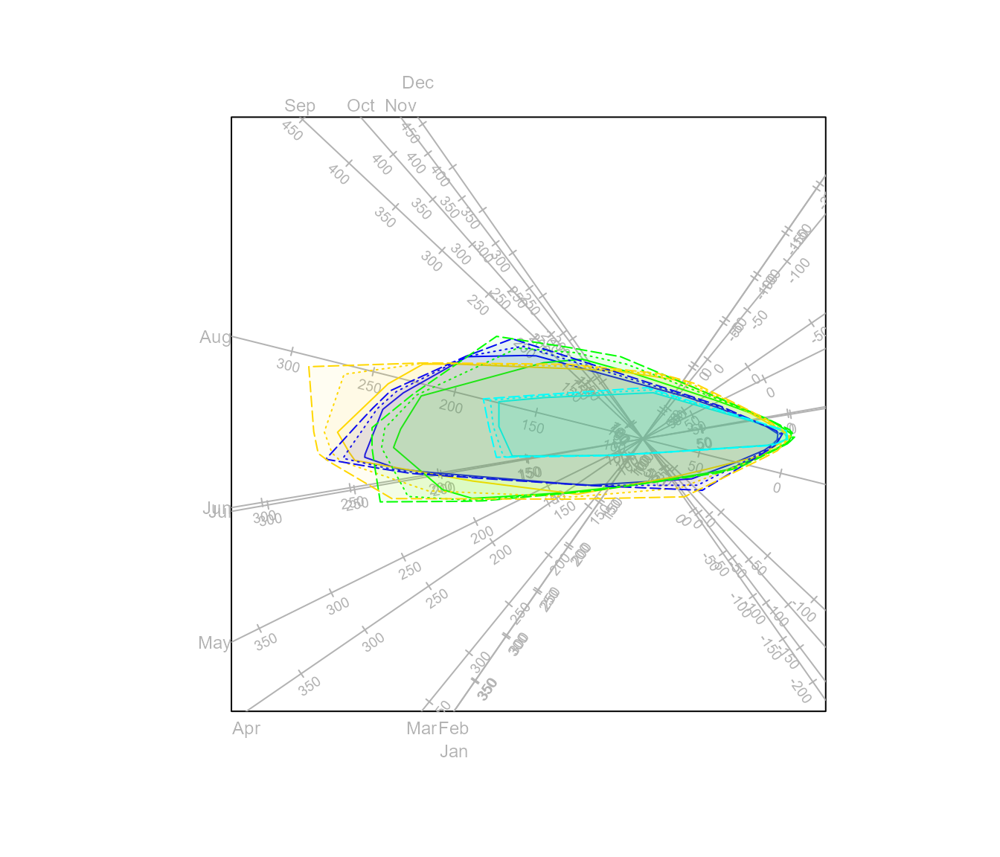
For a completely custom combination of \(\alpha\)-bags, we do not rely on any
recycling and specify each of the arguments alpha,
which, col, lty, lwd
as a vector. Since the calculation of halfspace location depth is very
computationally intensive, a random sample of size 2500 is chosen for
each group to construct the \(\alpha\)-bag. This sample size can be
changed with the argument max. Setting
trace = FALSE will suppress the message “Computing \(\alpha\)” -bag for groupX.”
biplot(sunspots, group.aes=century) |> PCA() |>
axes (label.dir = "Hor", label.line = c(0.8, rep(0,10), 0.8)) |>
samples (which = NULL) |>
alpha.bags (alpha = c( 0.9, 0.95, 0.99, 0.5, 0.6, 0.7),
which = c( 1, 1, 2, 3, 3, 3),
col = c("brown", "red", "gold", "deepskyblue2", "steelblue3","blue"),
lty = c( 1, 2, 10, 2, 2, 0),
lwd = c( 1, 1, 3, 1, 2, 1),
opacity = 0.1) |> plot()
#> Computing 0.9 -bag for 18-th
#> Computing 0.95 -bag for 18-th
#> Computing 0.99 -bag for 19-th
#> Computing 0.5 -bag for 20-th
#> Computing 0.6 -bag for 20-th
#> Computing 0.7 -bag for 20-thThe function alpha.bags provides the option to only plot
the samples that sit outside the \(\alpha\)-bags. This is done by setting the
argument outlying=TRUE. Note the which
argument may be overwritten when outlying is set to
TRUE. This happens in particular when which in
the samples() function differs from the which
in the alpha_bags() function.
biplot(sunspots, group.aes=century) |> PCA() |>
alpha.bags (col = c("brown", "red", "gold","deepskyblue2"),
opacity = 0.1,outlying = TRUE) |> plot()
#> Computing 0.95 -bag for 18-th
#> Computing 0.95 -bag for 19-th
#> Computing 0.95 -bag for 20-th
#> Computing 0.95 -bag for 21-stThe function ellipses()
If we observe a random sample from a \(p\)-variate normal distribution with \(\bar{\mathbf{x}}\) and \(\mathbf{S}\) the usual unbaised estimates of the mean vector and covariance matrix, then
\[ (\mathbf{x} - \bar{\mathbf{x}})' \mathbf{S}^{-1} (\mathbf{x} - \bar{\mathbf{x}}) = \kappa^2 \]
traces an ellipsoid in \(p\)
dimensions. For \(p=2\), choosing \(\kappa =
{(\chi^{2}_{2,1-\alpha})}^{\frac{1}{2}}\) where \(\chi^{2}_{2,1-\alpha}\) denotes the \((1-\alpha)100\)-th percentage point of the
\(\chi^2_2\) distribution results in an
ellipse covering approximately \(100\alpha\%\) of the configuration of
two-dimensional points. With default arguments df = 2 and
alpha = 0.95, the value of \(\kappa\) is \(2.447747\) and the ellipse function
constructs an ellipse that would enclose approximately \(95\%\) of the observations from a bivariate
normal distribution. The argument kappa can be specified
directly, and will take precedence over the specification of
alpha. The other arguments of the ellipses()
function operates identically to the corresponding arguments of the
function alpha.bags(). Using \(\alpha\)-bags, rather than ellipses is
recommended in general, since the construction of the ellipses are based
on the underlying assumption of a random sample observed from a normal
distribution.
biplot(sunspots, group.aes=century) |> PCA() |>
axes (label.dir = "Hor", label.line = c(0.8, rep(0,10), 0.8)) |>
samples (which = NULL) |>
ellipses (alpha = c(0.9, 0.95), lty = c(1,3,5), opacity = 0.1) |>
legend.type(ellipses = TRUE) |> plot()
#> Computing 2.15 -ellipse for 18-th
#> Computing 2.15 -ellipse for 19-th
#> Computing 2.15 -ellipse for 20-th
#> Computing 2.15 -ellipse for 21-st
#> Computing 2.45 -ellipse for 18-th
#> Computing 2.45 -ellipse for 19-th
#> Computing 2.45 -ellipse for 20-th
#> Computing 2.45 -ellipse for 21-st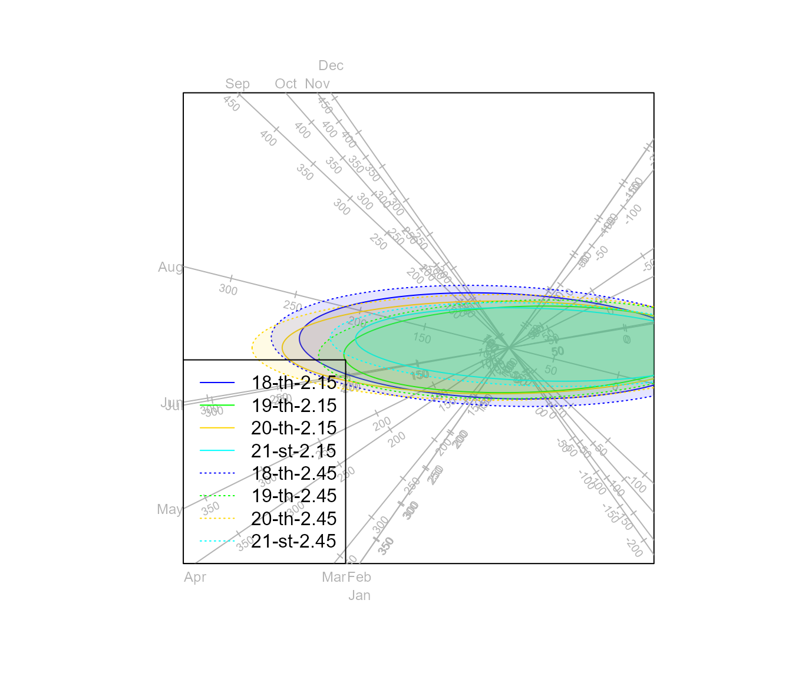
biplot(sunspots, group.aes=century) |> PCA() |>
axes (label.dir = "Hor", label.line = c(0.8, rep(0,10), 0.8)) |>
samples (which = NULL) |>
ellipses (kappa = 1:2, lty = c(1,3,5), opacity = 0.1) |>
legend.type(ellipses = TRUE) |> plot()
#> Computing 1 -ellipse for 18-th
#> Computing 1 -ellipse for 19-th
#> Computing 1 -ellipse for 20-th
#> Computing 1 -ellipse for 21-st
#> Computing 2 -ellipse for 18-th
#> Computing 2 -ellipse for 19-th
#> Computing 2 -ellipse for 20-th
#> Computing 2 -ellipse for 21-st
The function density2D()
This is a function for constructing two-dimensional PCA biplots on
top of a density plot of a two-dimensional PCA approximation of the
input matrix. The R function kde2d described by Venables and Ripley (2002) and available in the
package MASS is used to perform two-dimensional kernel
density estimation with an axis-aligned bivariate normal kernel,
evaluated on a square grid.
The function plots the density for each group (specified in the
argument which) in the data. In the following case, the
second group’s density is plotted with contours=TRUE. A
vector of at least two components should be specified in the
col argument to display the colours of the density response
surface. There are cuts-1 colours interpolated between the
components of the col. The default is
c("green", "yellow", "red").
biplot(state.x77,group.aes = state.region,scaled = TRUE) |> PCA() |>
density2D(which=2,col=c("white","purple","blue","cyan"),contours=TRUE) |> plot()
In this case, the vector group.aes is not specified, so
all samples form under one group.
biplot(state.x77,scaled = TRUE) |> PCA() |> samples(which=NULL) |>
density2D(which=1,col=c("white","purple","blue","cyan"),contours = TRUE,cuts = 20) |> plot()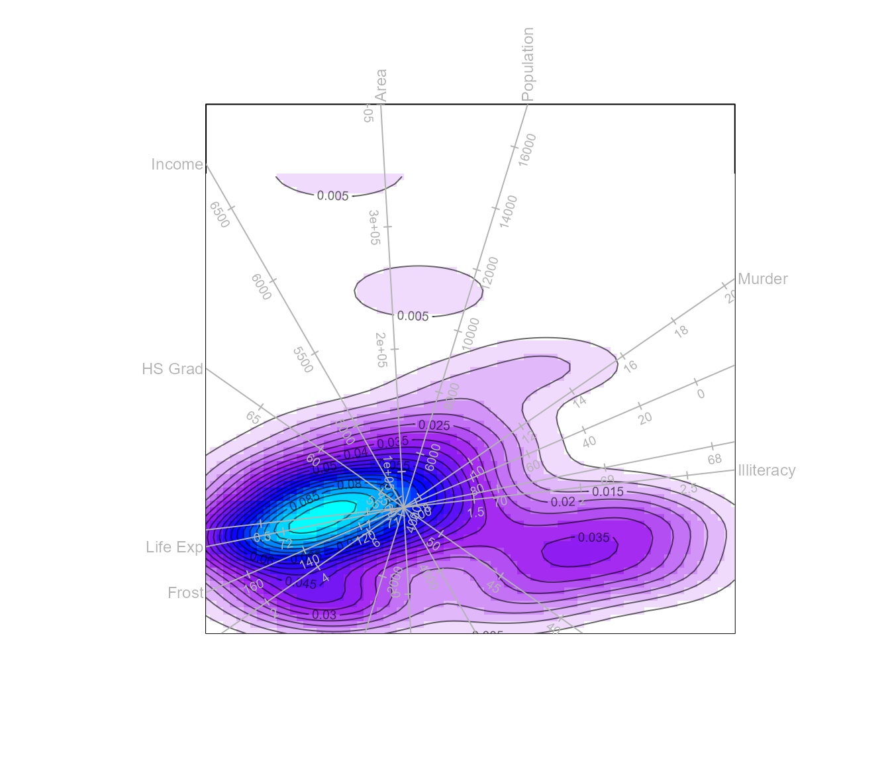
The functions interpolate() with
newsamples() and newaxes()
The process of interpolation is described by Gower and Hand (1996) as the process of finding the coordinates of a \(p\)-dimensional sample in the lower dimensional biplot space. For PCA we showed in section 1 in the biplotEZ vignette that the sample points are represented by \(\mathbf{G}=\mathbf{UDJ}_2\) which can be written as \(\mathbf{G}=\mathbf{UDV'VJ}_2=\mathbf{XVJ}_2\). Finding the position of a new sample \(\mathbf{x}^*:p \times 1\) make use of the same transformation so that the 2D coordinates is given by \({\mathbf{z}^*}':2 \times 1 ={\mathbf{x}^*}' \mathbf{VJ}_2\). Similarly, the position of a new variable \(\mathbf{x}^*:n \times 1\) is added using a regression method that assumes that \(\mathbf{x}^*\) is approximately a linear function \(\mathbf{x}^* = \mathbf{XV}_r\mathbf{b}_r\) with solution \(\hat{\mathbf{b}}_r :r \times 1 = (\mathbf{V}'_r\mathbf{X}'\mathbf{XV}_r)^{-1}\mathbf{V}_r\mathbf{X}'\mathbf{x}^*\).
Adding samples and variables to the plot is facilitated by the
function interpolate(). Note that the samples and variables
to be interpolated did not contribute to the construction of the biplot.
This is the reason why Greenacre (2017)
term these supplementary points or axes.
The function interpolate() accepts a matrix or data
frame containing the samples and variables to be interpolated. The
argument newdata containing the samples to be interpolated
needs to have a similar structure to the data set sent to
biplot(). If biplot() received a data frame,
newdata can be either another data frame or a matrix
containing the subset of numerical variables. Similarly, the argument
newvariable containing the new variables to be interpolated
needs to have the same number of samples in the data sent to
biplot().
Suppose we construct a PCA biplot of the first \(40\) samples in the data set
rock and then \(8\) new
samples is to be interpolated the call will be:
biplot(rock[1:40,], scale = TRUE) |> PCA() |>
interpolate (newdata=rock[41:48,]) |> plot()The function newsamples() operates similar to samples,
allowing changes to the aesthetics of the interpolated new samples.
There is no argument which for newsamples()
since it is assumed that samples are interpolated to be represented in
the biplot. All the other arguments are vectors of length similar to the
number of samples in newdata. To change the colour of the
interpolated samples and add labels, the following call will be
used:
biplot(rock[1:40,], scale = TRUE) |> PCA() |>
interpolate (rock[41:48,]) |>
newsamples (label = TRUE, label.side = "top", col = rainbow(10)) |> plot()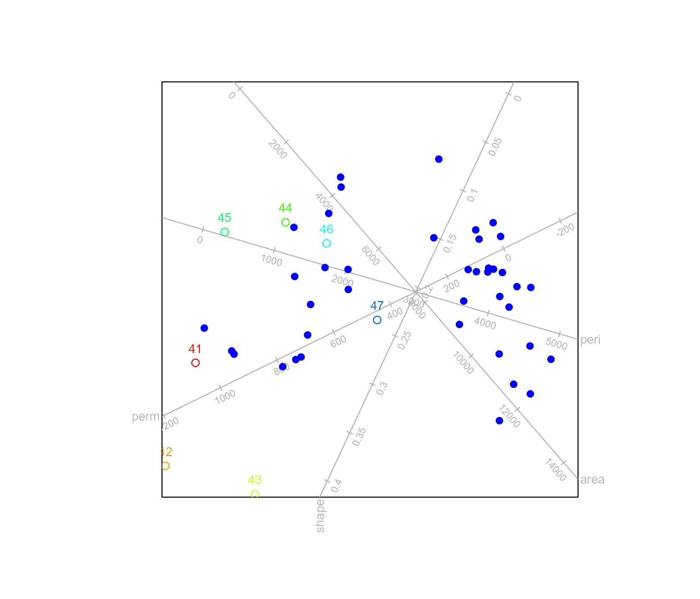
Suppose constructing a PCA biplot using the three variables in the
rock data, and interpolating the other variable.
biplot(rock[,c(1,2,4)], scale = TRUE) |> PCA() |>
interpolate (newvariable =rock[,3]) |> plot()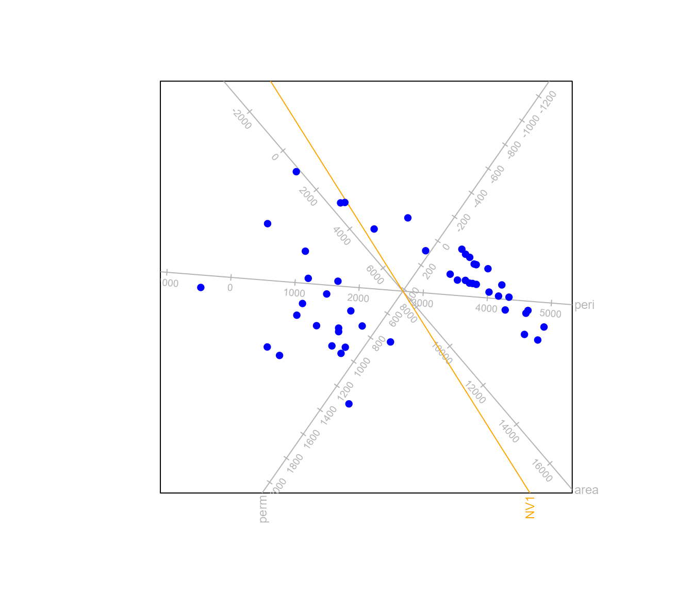
We can change the aesthetics of the new variables with the
newaxes() function which operates similarly to the
axes() function.
biplot(rock[,c(1,2,4)], scale = TRUE) |> PCA() |>
interpolate (newvariable =rock[,3]) |>
newaxes(col="red",ticks = 50,X.new.names = "shape") |> plot()The function interpolate() will also work if new samples
and new variables need to be interpolated at the same time. For
example:
biplot(rock[1:40,c(1,2,4)], scale = TRUE) |> PCA() |>
interpolate (newdata=rock[41:48,c(1,2,4)],newvariable =rock[1:40,3]) |>
newaxes(col="red",ticks = 100,X.new.names = "shape") |> plot()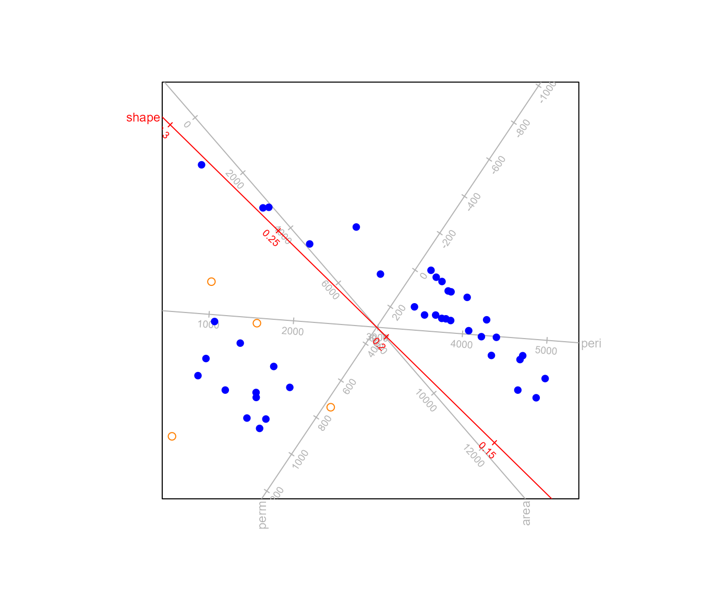
Notice that newdata has the same number of variables as
the data sent to biplot() and newvariable has
the same number of samples as the data sent to
biplot().
The function prediction()
To add prediction of the sample points to the biplot, the function
prediction() is used.
out <- biplot(rock, scale = TRUE) |> PCA() |>
prediction (predict.samples = TRUE) |> plot()In addition the predictions are computed and can be accessed with the
summary.method.
summary(out)
#> Object of class biplot, based on 48 samples and 4 variables.
#> 4 numeric variables.
#>
#> Sample predictions
#> area peri shape perm
#> 1 5182.518 2694.6678 0.08624348 17.426253
#> 2 7691.949 3526.4942 0.13514234 35.517473
#> 3 8318.033 3628.6997 0.16177613 99.694598
#> 4 7636.831 3630.8908 0.11725845 -34.364599
#> 5 8084.856 3781.5005 0.12570117 -32.323140
#> 6 8499.105 3765.0371 0.15484655 57.771249
#> 7 9738.891 4180.1532 0.17843607 64.357324
#> 8 8877.364 3954.7565 0.15340118 24.056153
#> 9 8718.501 3605.5323 0.19094566 190.899483
#> 10 6776.004 2972.9886 0.15153800 170.463202
#> 11 9517.287 4203.7977 0.16081144 7.756551
#> 12 8667.626 3841.4265 0.15531722 47.357938
#> 13 10542.328 4258.1501 0.21989947 176.826997
#> 14 9102.060 3644.4083 0.21051537 243.662966
#> 15 9351.922 4027.1591 0.17428339 75.571235
#> 16 8590.817 3776.8963 0.15917449 68.935190
#> 17 11002.857 4604.0870 0.20238688 70.663421
#> 18 11465.727 4562.1556 0.23817832 184.664030
#> 19 11713.492 4918.0115 0.20549573 31.397809
#> 20 9794.836 4371.1960 0.15588772 -32.950729
#> 21 7486.756 3459.7842 0.13096481 33.297702
#> 22 11970.162 4545.5777 0.27319335 292.407085
#> 23 12048.397 4816.3066 0.24117196 154.306887
#> 24 8161.391 3531.7628 0.16489230 124.063184
#> 25 6473.046 1887.1108 0.28067750 726.488443
#> 26 3937.319 1270.4047 0.20059243 581.415341
#> 27 6361.245 2198.9634 0.23068527 528.041307
#> 28 4364.754 1641.8821 0.17743170 454.331807
#> 29 5961.529 1813.4043 0.25757496 668.505918
#> 30 5419.192 1075.2405 0.32352672 980.895692
#> 31 6687.830 1728.1793 0.31639877 858.392956
#> 32 6862.484 1912.2039 0.30251759 788.205529
#> 33 5072.364 1506.6448 0.24189571 668.903853
#> 34 5330.680 1039.1725 0.32272399 984.068789
#> 35 5510.961 1842.2520 0.22437503 564.315264
#> 36 6834.394 1864.9721 0.30716675 809.483177
#> 37 3788.048 1612.7808 0.14398515 358.372419
#> 38 3912.089 510.0085 0.30315670 1007.222092
#> 39 3569.066 1564.6150 0.13637128 342.959576
#> 40 5655.233 2040.8001 0.20653151 479.977300
#> 41 4984.153 680.9452 0.34932075 1119.421832
#> 42 1341.442 -373.1439 0.25731781 1006.268880
#> 43 6519.731 738.7171 0.44107961 1386.097805
#> 44 8964.500 1961.9907 0.43213873 1169.846628
#> 45 3589.848 1128.4355 0.19749274 594.085244
#> 46 2533.721 417.0546 0.22642373 791.127217
#> 47 4876.168 1721.4564 0.19972344 508.970410
#> 48 7521.495 2660.6426 0.24273124 492.744256The other arguments to prediction() are
predict.means to also (or only) predict the group means and
which to indicate which axes’ predictions are shown on the
biplot. By specifying predict.samples = TRUE and/or
predict.means = TRUE all samples and/or means are
predicted. Alternatively either of these arguments accepts a vector
indicating which samples and/or means to predict. In the example below,
only the mean values of the Central and West regions are predicted.
out <- biplot(state.x77, scale = TRUE) |> PCA(group.aes = state.region, show.class.means = TRUE) |>
prediction (predict.means = 3:4, which = c("Income","Murder","Population")) |> plot()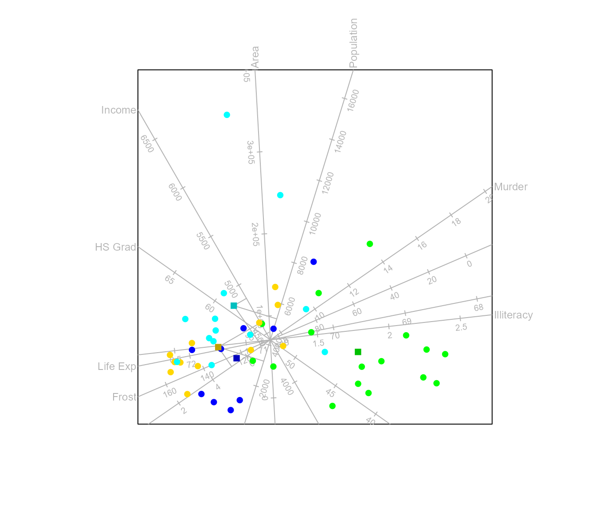
summary(out)
#> Object of class biplot, based on 50 samples and 8 variables.
#> 8 numeric variables.
#>
#> Class mean predictions
#> Income Murder Population
#> North Central 4611.672 5.108174 3211.604
#> West 4862.927 6.865661 5268.183The functions reflect() and rotate()
The function reflect() allows for the user to reflect
the biplot display about the x-axis or y-axis or both. The argument
reflect.axis offers the options
"FALSE","x","y","xy".
Here the biplot is reflected about the x-axis.
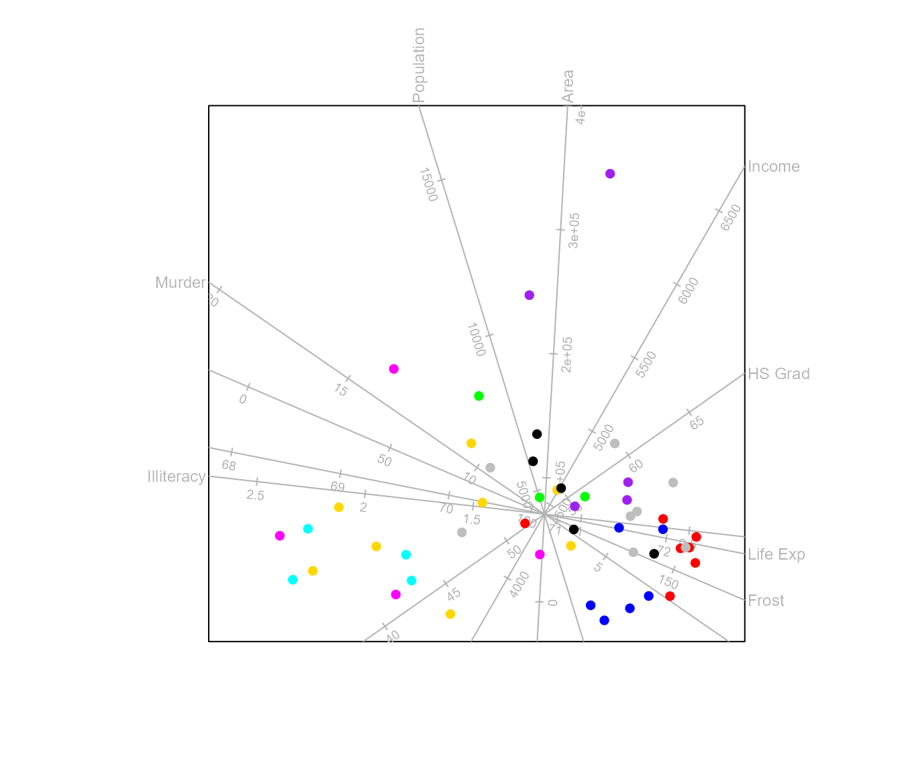
Here the biplot is reflected about the y-axis.
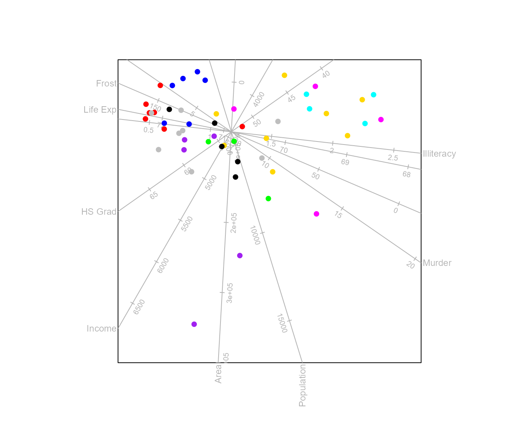
The function rotate() allows for the user to rotate the
biplot display by a certain value of degrees. The default is 0 and
positive value results in anti-clockwise rotation and negative value in
clockwise rotation. For example when rotate.degrees is set
to 100 degrees, then the biplot is rotated by 100 degrees in the
anticlockwise direction.
Zooming in on the biplot with zoom = TRUE in
plot()
The plot() function has built-in functionality to zoom
in on the plot. This is done through the locator() function
which alters the xlim and ylim paramaters of
the plot. The implementation opens up a new graphics window before
promting the locator function. It is illustrated below:
biplot(state.x77,scaled = TRUE) |>
PCA() |>
samples(which=NULL) |>
density2D(which=1,col=c("white","purple","blue","cyan"),contours = TRUE,cuts = 20) |>
plot(zoom=TRUE)With the final plot then rendered as: